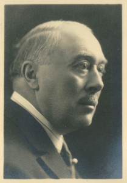

André Georges SAINT-LÉGER — Né le 29/09/1870 à Tournai — Décédé le 25/08/1952 à Paris 18°
André Georges SAINT-LÉGER
Né le 29/09/1870 à Tournai
Décédé le 25/08/1952 à Paris 18°
Résumé
André Saint-Léger s'inscrit dans le réseau du grand patronat textile du Nord par une trajectoire typique de ce milieu : celle du filateur indépendant qui fusionne son outil de production avec une maison plus puissante avant d'en devenir administrateur. Né à Tournai, il s'établit à Lille où il habite un remarquable hôtel particulier au 107 rue Royale, adresse emblématique de la haute bourgeoisie lilloise. Avec son frère Pierre, il remplace la vieille usine du 32 rue des Tours par une filature de lin moderne à La Madeleine. Cette filature est ensuite cédée à Édouard Agache, ce qui ouvre à André Saint-Léger les portes du conseil d'administration des Établissements Agache — la plus importante entreprise française de filature de lin, dont les usines de Pérenchies, La Madeleine et Seclin employaient 2 000 ouvriers et constituaient le premier employeur de la région. Il y siège aux côtés de son fils Claude, fait suffisamment rare pour être mentionné : en 1928, lors du centenaire des Établissements Agache, père et fils figurent tous deux parmi les administrateurs réunis autour de Donat Agache. Il épouse Marguerite Delemer, petite-fille d'Aimé Ternynck, industriel de Cassel et Roubaix. Vers 1921, il acquiert le château et le domaine d'Hermaville, propriété de campagne qui marque l'accession de la famille au rang de grande notabilité terrienne. Décoré de la Légion d'honneur selon des sources concordantes, il traverse les deux guerres mondiales en continuant à administrer une entreprise dont les usines avaient été entièrement détruites lors de la Grande Guerre et reconstruites à partir de 1919 grâce aux indemnités de dommages de guerre. Il décède le 25 août 1952 à Paris dans le 18e arrondissement. Son fils Claude Saint-Léger, lui aussi administrateur des Établissements Agache, épousera Agnès Wattinne, arrière-petite-fille de Louis Wattinne-Bossut.
Sources :
- données familiales (gedcom)
- Wikipedia, Entreprise Agache
- siperenchiesmetaitcontee.blogspot.com (centenaire Agache 1928).
{kind=link}

{kind=link}
📷 Cliquez pour voir 2 photo(s)
Arbre généalogique
04/02/1844 — 06/09/1899
Amélie LONGHAYE
04/07/1850 — 06/05/1936